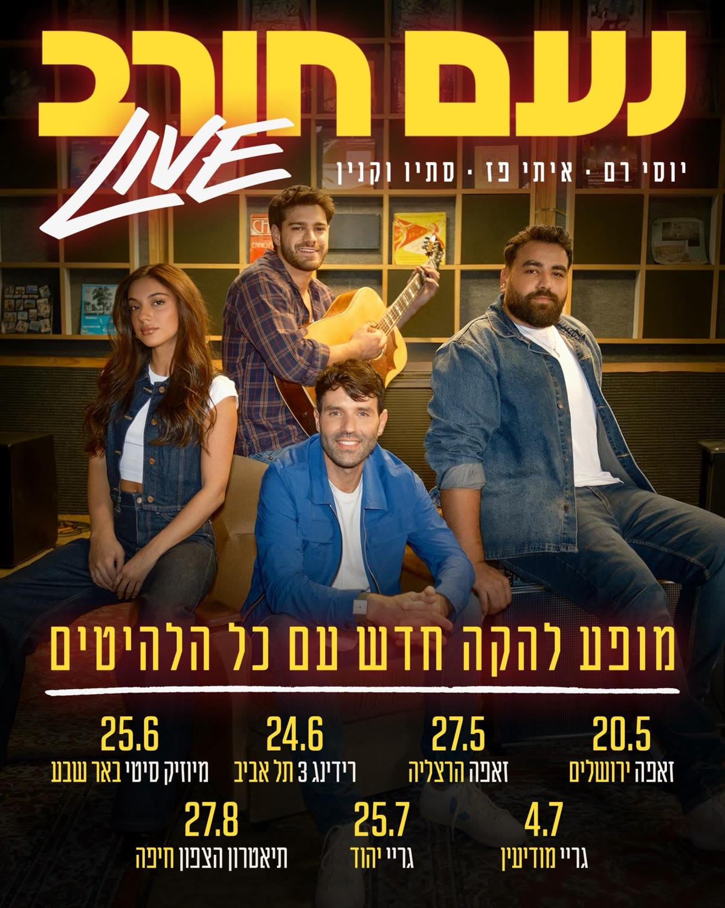

תקציר
סיבוב ההופעות החדש של נעם חורב — הפזמונאי, המשורר והסופר זוכה פרסי אקו"ם, ששיריו מבוצעים בפי גדולי האמנים בישראל ושמופע היחיד שלו רץ למעלה מ־1,200 פעמים בשבע השנים האחרונות. בתוכנית החדשה עולה חורב לראשונה לבמה עם להקה חיה מלאה וזמרים אורחים — יוסי רם, איתי פז וסתיו וקנין — המבצעים את הלהיטים שכתב, וערב אינטימי של מילים הופך לאירוע קונצרטנטי מלא.
צוות
- עיצוב וידאו: ניק דריידן
- בימוי: עמית אפשטיין
הסיבוב
2026, ברחבי הארץ: זאפה ירושלים (20.5), זאפה הרצליה (27.5), רידינג 3 תל אביב (24.6), מיוזיק סיטי באר שבע (25.6), גריי מודיעין (4.7), גריי יהוד (25.7) ותיאטרון הצפון חיפה (27.8) — חלק מהתאריכים אזלו.
קונספט חזותי
במיוחד עבור נעם וצוותו יצר ניק דריידן עיצוב וידאו אימרסיבי ייחודי, המשלב את שורותיו של המשורר, הקמות לתחייה על המסך, עם וידאו־ארט אותנטי בחתימתו.
גלריה
